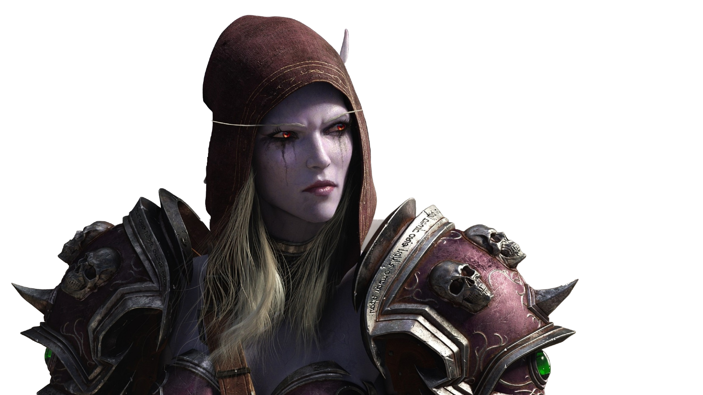

¡Las islas dragón os esperan!
Las Islas del Dragón son el hogar ancestral de los Vuelos de Azeroth. Cuando el mundo se desintegró durante el Gran Cataclismo, la magia desapareció y la tierra quedó inactiva. A medida que las Islas Dragón despiertan, también lo hacen viejas enemistades y amenazas latentes durante mucho tiempo.

¡Defiende la libertad por la Horda!
La Horda es la otra gran facción del juego, con un enfoque más diversificado en términos de razas y culturas, y un trasfondo de supervivencia y honor personal. A menudo se le asocia con el pragmatismo y la lucha por la libertad y la supervivencia. La Horda está compuesta por orcos, trols, no-muertos, tauren, elfos de sangre, goblins, pandaren y dracthyr. Cada raza tiene una historia única y razones para unirse a la Horda.
La Horda tiende a enfocarse en la supervivencia, el honor, y el rechazo de la opresión. Aunque a veces es percibida como más agresiva, también posee un sentido de honor y un fuerte deseo de proteger a sus miembros y reclamar su propio lugar en el mundo.